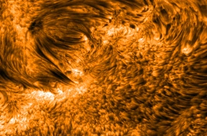
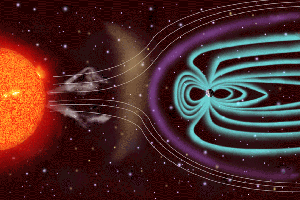
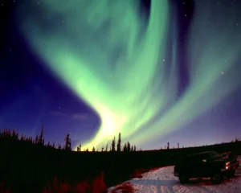

Shibaji Chakraborty
Shibaji Chakraborty
It was the last week of August 2017, the start of Fall semester; I was rushing on my bike towards Hutcheson Hall, Virginia Tech, to attend my graduate-level probability class. I received an email alert on my phone from NOAA stating there was a strong chance of a Solar Storm that might impact Earth by next week. Being a noob in the field at that time (although I do not consider myself a connoisseur yet…) it felt incredibly impossible to observe a scenario like that during the last solar cycle (defined by the solar magnetic phases). Eventually, they were right about the prediction, and there was the biggest solar storm of that solar cycle that hit the Earth. NASA calls these solar storms Solar Burps.
The Sun, in the visible spectrum — the light the human eye is sensitive to — looks remarkably consistent. It nonchalantly powers our solar system with its light and heat without any expectation from us or any other planet of the solar system, for that matter. So, how come a Sun-like quiescent star can create a storm and we can never see that coming? One can unveil the truth if he/she observes the Sun in the X-ray spectrum. To be specific, the Sun in the X-ray spectrum is the most hostile place for life in our solar system — a Sun that Burps every now and then and creates a problem for us.
Don't worry — the Sun has no digestive system, it does not eat humans, and has no digestive issues!

A depiction of a coronal mass ejection, with Earth to scale. Image credits: NASA / Goddard.
I wanted to debunk a few less-known facts:
- Should we worry about the solar storms that are heading towards us?
- Should we hunker down inside and disconnect our kitchen appliances, TV, phone, and internet?
- Or is this just hype about a non-event made by the media?
Just like most of the other things in life, the reality is somewhere between ‘yes’ and ‘no’. The subjective nature comes from the shape and structure of these storms. Solar storms can create very real damage to electrical equipment. A solar storm in March 1989, one of the strongest solar storms in recent recorded history, caused several nights of darkness over Quebec and Canada. That’s not it — approximately five years later, two of the Anik communication satellites were taken out of commission, one for hours, another for months, due to a solar storm. Moreover, these storms can destroy satellites by deorbiting them from their trajectories. For example, a 2022 solar storm resulted in Starlink transmitters drifting back into Earth’s atmosphere, where they will burn up, potentially costing the company about $100 million. The extraordinary solar storm that occurred in 1859 is the strongest solar storm of recorded human history, also known as the ‘Carrington Event’.
But how do solar storms create havoc in electrical equipment and satellites and spare us? What are these solar storms actually anyway?
What Are Solar Burps?
Let’s start targeting the second question first. As mentioned earlier the Sun is anything but calm — but that is in the X-ray and EUV spectrum. In fact, the Sun’s atmosphere is highly active. When the Sun “Burps!”, it spews stellar material and magnetic fields from the surface of the Sun towards the solar system, sometimes towards the Earth. These burps are often associated with other solar events, such as X-rays, charged particles, and magnetized plasma across the solar system.
The Sun, being the powerhouse of the solar system, releases enormous amounts of power every second — roughly 25 trillion (i.e. 25,000,000,000,000!) times that required by all the inhabitants of the Earth. The Sun produces 25 × 1012 times all of mankind’s needs each second! For analogy, a typical household needs 1,000 watts (kilowatts) per second, while its supplier power plant generates power in the millions (mega, 106) of Watts. So, as per this analogy there are 1,000,000 power plants each with a capacity of 25 megawatts supplying power to only one house.
This huge amount of power in the Sun is generated by ‘nuclear fusion’ reactions and ‘solar magnetic fields’, creating it a ‘plasma blob’ in space. These complex thermonuclear processes make the Sun’s surface bubble like a cauldron. We can see structures on scales from thousands of kilometers down to just a few, and probably smaller. However, some of the structures may be in the order of Earth — or sometimes 100s of Earths in size.

A closer look at the Sun’s surface, showing solar active regions and sunspots. Image credits: NASA / Goddard.
These extremely bright and dark spots are referred to as ‘solar active regions’ and ‘Sunspots’. All these structures stem from intense magnetic field activity and plasma processes. They act like energy storage units and possess enormous amounts of energy within them. Magnetic and plasma activities deposit energy into these regions semi-periodically. When these regions are unable to store the energy, they release it to outer space by producing huge flares/eruptions, which send billions of tons of hot ‘plasma’ (energetic charged particles) into space traveling at two million kilometers per hour. This is commonly known as a Coronal Mass Ejection (CME) — or a Solar Burp.
Why Electrical Equipment and Not Humans?
Now, let’s deal with the first question: why do solar storms spare us humans and impact electrical equipment instead? The answer to this question is two-fold. First, unlike tropical storms (which stem from atmospheric temperature or pressure differences), solar storms are ‘magnetic storms’ — they stem from electric and magnetic potential differences.
Why is a ‘magnetic storm’ a problem for electrical equipment?
Over 200 years ago, Michael Faraday demonstrated that if you hold a bar magnet and move it rapidly near a wire, it will produce an electric current through the wire. It is the same principle used by turbine-dynamos in power plants to create electrical power — scientifically referred to as electromagnetic induction. Solar magnetic storms can change magnetic fields around the Earth over distances hundreds of thousands of kilometers long, leading to strong induction in the long conducting wires around us. The wires around us — some tens and hundreds of kilometers across (e.g., high voltage transmission lines carrying power from power grids to our houses) — start getting serious induced electrical currents. The March 1989 storm caused enough electrical surge to shut down the Quebec power grid.

A depiction of the Sun-Earth system. The image illustrates how Earth’s magnetic fields get distorted by a CME and divert millions of tons of plasma. Image credits: NASA / Goddard.
While we are not susceptible to magnetic induction, high-energy plasma can cause severe damage to any living organism. But the good news is that the magnetic fields and atmosphere around the Earth protect us from the worst of these high-energy particles and solar radiation.
Are we often right in the firing line?
The short answer is ‘yes’. While billions of tons of plasma (and X-rays) are traveling at relativistic speeds, by the time a storm reaches Earth it’s spread out over a vast area. The density of plasma in near-Earth space (Geospace) is so low that if you could imagine standing up in the wind of particles traveling at millions of kilometers per hour, you wouldn’t feel a thing — but your body cells would. A prolonged and constant bombardment of DNA leads to cancer. That’s one of the reasons why sending astronauts to Mars is so tough.
Imagination aside, these storms have a severe impact on our modern civilization. Losing satellites and power grids can cost billions of dollars. So, it should come as no surprise that predicting these events and building safety measures for both satellites and power distribution systems is one of the primary goals of national security. Early warning systems are well in place — we get anywhere between two to five days’ notice.
Can We Observe a Remnant of a Magnetic Storm?

A green aurora, somewhere in Alaska, USA. Image credits: University of Alaska Fairbanks.
Every storm comes with a ‘Rainbow’. Just like any tropical storm, a magnetic storm creates its own Rainbow — we refer to it as Aurora. It is an out-of-the-world scene one can experience. Earth’s magnetic fields divert the energetic plasma particles, trap a part of those energetic particles, and stream them around Earth’s magnetic pole, causing the aurora.
In summary, we have not seen a truly large solar storm and associated magnetic storm in over 100 years. Neither the March 1989 nor September 2017 events compare to the great solar storm of 1859 (‘Carrington Event’), which is the largest known solar storm. With the insurgence of modern numerical techniques and AI tools, we think we have the capability of predicting the scale of a large solar storm. The reality might be much graver than what we expect — our reliance on electrical equipment and satellites is increasing day by day, and we are unaware of how much a large solar storm may cost us.
While the Sun may give us life, one extra big ‘Burp’ could produce some grave problems. I would like to ‘think’ of myself as a non-believer — but maybe this is the reason ancient civilizations treated the Sun as a God!